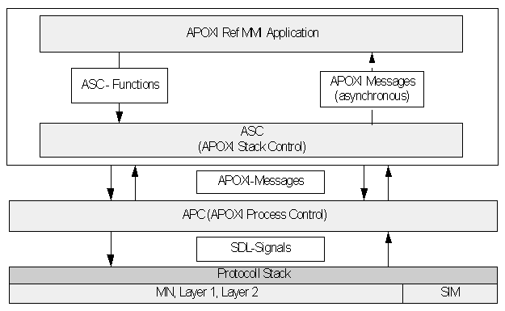

APC Overview
1 Introduction
APC (APOXI Process Control) is an an exchangeable layer for external communication (e.g. SDL-signal-driven, AT-command-driven, etc.). APC provides wrapper classes for accessing the protocol stack mainly needed by ASC and ADC. The only purpose of the APC is the transformation (mapping) of SDL-signals into C++ wrapper classes and back.
2 Sending SDL Signals from Applications to Stack
When applications want to send some SDL signals to stack, ToStackMsg with parameters will be sent to APC. APC will then convert the parameters to SDL arguments and send them to the Stack. ToStackMsg is a special message for carrying information from APOXI to the protocol stack.
3 Sending SDL Signals from Stack to Applications
Stack sends a SDL signal to APC and APC transforms these signals to APOXI arguments. These arguments will then be sent within a FromStackMessage to ASC (APOXI Stack Control). FromStackMessage is wrapper for APC arguments. ASC only needs to listen to FromStackMessages. APC thus provides better performance due to simplified routing.
4 Message Flow in APOXI
ADC and ASC provides no direct interface for MMI applications. MMI applications can communicate to ASC and ADC only through APC.
The message flow in APOXI is given in Figure 1.
 |
Figure 1. Message Flow
5 APC Wrapper classes
Some of the wrapper classes provided by APC for protocol stack acces are listed in the following: